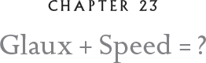
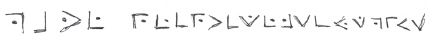

“All right now!” Dylan snapped at the snaggle26 of the dozen snakes that coiled before her. “I want to see those ESPs go to full extension. Cadet Jena, I wasn’t born yesterday. I might not be a striated violusian, but I’ve been diving with them for longer than you can remember. You can do twice what you’re doing now. You want to fly?”
“Yes, ma’am —”
Dylan reared up into a high, tight coil and hissed, showing a lot of fang.
“I mean, yes, Master Sergeant Dylan Lazuli!”
“Well, you ain’t getting off the ground at this rate. No owl will want to carry you. The more you spread your ESPs, the lighter you will become to help your owl get airborne.”27
I watched these exercises every evening at First Lavender, even when I wasn’t part of them. When the more advanced snake students were ready to embark on their first flight, Lil and I, along with Loki and a half-dozen other owls, became their vehicles. In the beginning, we owls were a bit nervous because the snakes were a new kind of weight. We had to learn how to balance ourselves and trim our wings to fit the burden. It was especially challenging when snakes went from a recumbent position to a full or half coil for strike. Their center of gravity shifted and could send us spinning. But once we learned how to cooperate, the rewards were bountiful. When the snakes expanded their ESPs, it could provide fantastic lift. In an odd way, it was similar to soaring, but there were no warm thermals involved.
“All right now, troops, we’ll make two passes with all cadet snakes in position number one. On the third pass, assume a half coil and a double-blade ax-head shape. Fourth pass, coil to full position, maintaining the double blade, and extend your scale plates. Owls, you’ll feel a slight lift. And remember, owls, the snakes are your copilots. If you need more lift, just say ‘full extension.’”
The progress the newly recruited snakes made was amazing. Their head transitions were smooth, they coiled up on the backs of the owls in flight, and they hardly ever wavered. We knew that snakes would be invaluable on the ground, but we hadn’t been sure how they would do in flight. But they were learning fast. On another part of the field, more advanced snakes were engaging in target practice. Owls flew above snakes, with dummies suspended from their talons. The snakes took aim and struck like lightning.
We were also making great advancements with midair reloads. Great Grays and Snowies worked particularly well as reloaders as they were the most deft in sidling up to the tiny owls that composed the Frost Beaks. But we were also now training Eagle Owls and Barn Owls as reloaders for larger weapons. Thora’s quivers were proving quite revolutionary, and we knew they would prove invaluable in combat. Then Loki came up with the brilliant idea of not just reloading with weapons but refueling with food in noncombat situations, such as reconnaissance missions. The small owls, like Elf, Pygmy, and Northern Saw-whets, who were most often used for reconnaissance, burned up their energy sources faster than larger owls. They got hungrier quicker and fatigue set in. But if a Snowy or Great Gray could carry prey, just a tiny snow mouse or a rockmunk, the smaller owls wouldn’t have to stop to hunt.

To build a division with creatures ranging from owls to snakes and — we hoped — snow leopards was not easy. One of the first things that I insisted on after I located Dylan, Hoke, and Gilda was that snakes be given official ranks as members of the Kielian League. The first started as master sergeants.
Then we began the snake recruitment process in earnest. It might seem counterintuitive, but I purposely looked for the laziest snakes I could find, the snakes who were distracted in the honing pits, or the excavators who were bored with knocking their heads against rock barracks. I sensed that these snakes were intelligent but had never been truly challenged.
My theory was simple but it worked! The nest-maids who were completely stupefied from slurping up vermin in owl hollows flocked to our recruitment stations. We instilled in them a sense of pride.
Those first few weeks passed so fast. General Andricus might have appointed Moss, Lil, Loki, Blix, and me instructors, but we were learning as much as we were teaching. The second week, Moss was dispatched to fly to the far north where the snow leopards lived on the ice cliffs above the H’rathghar glacier. In addition to recruiting snow leopards, he was also charged with recruiting more large and powerful owls — Eagle Owls, Northern Hawk Owls if possible, Great Horneds, and Great Grays.
Almost nightly, Peregrine Falcons flew in with postings from the front. We would watch them land and race immediately to General Andricus’ headquarters. The tension in the air was so thick you could cut it with an ice scimitar. A weird silence fell over the entire island each time a messenger landed. The only sound heard was the rasp of the Kielian snakes in the honing pits.
Bad news seeped out in bits and pieces from command headquarters. The front was moving closer. A colonel had been wounded, a celebrated general killed, and worst of all, another peaceful community razed and hundreds of owlets left orphaned or dead. Every day, new troops mustered on the flight parade grounds of Dark Fowl to go to the front and support the tactical squadrons engaged in combat. My mother had been called back to her unit and resumed her position as a commando with the Ice Daggers. Word had come in to me that a broody had been installed for my brother, Ifghar, who was proving to be a talonful.
In the third week of training, an especially fast peregrine, Glynnis, flew in at a truly amazing speed as I perched at the top of a silver fir tree where I had been observing midflight reload exercises. I feared the worst when I saw how fast she was flying. What was it? Had disaster wiped out an entire brigade? It was as if the sky, the very clouds, parted for her.
When I realized that she was flying directly to the crown of the silver fir where I perched, my first thought was that something had happened to Mum. I began to wilf.
“It’s good news!” Glynnis announced. “At least, I think it is. I can’t read code.”
“What?”
“News from Moss,” she replied, handing me a white bark with a message written in Hollow Code:

It read: “Have recruited six snows.” I knew at once he was speaking of snow leopards. This was extraordinary news. It was all coming together. For the first time, I had real hopes of our being ready by the spring offensive.
We needed more snakes — as many as possible, and especially the really large ones. Gilda had told me there were some very large fellows at the eastern end of Stormfast. I had wanted to go check in on my little brother, Ifghar, and I thought I could scout for a few large snakes at the same time. So I went. Little did I dream that what I found on that scouting trip would have such an immense impact on the rest of my life.
Dear reader, might you guess of whom I write? Her blue-green scales are glittering now as she makes her way into my hollow while I write these words. She is bringing me my dawn constitutional — a cup of milkberry tea laced with a dram of bingle juice. I must go back and cross out the words “blue-green.” She would be furious at my lack of precision in calling her blue-green, or Glaux forbid, bluish or greenish. How well I remember her first words to me….